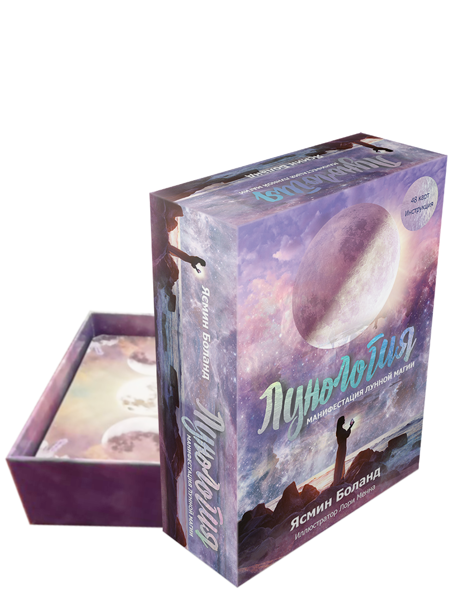

Об авторе

Флавия Кейт Питерс, Барбара Майклджон-Фри
Лунология
Настройтесь на Луну и ожидайте чудес!
Луна — наш неизменный спутник на протяжении тысячелетий. Она побуждает нас использовать возникающие возможности и помогает избавляться от любых рамок и оков. Эти замечательные карты с предсказаниями помогут сформулировать ваши желания и научиться притягивать их в свою жизнь.
Каждая карта несет в себе совет, как вам поступить в сложившейся ситуации и как зарядить ваши действия магической энергией, необходимой для достижения наилучших результатов. Откройте для себя уникальную силу Луны, когда она перемещается по знакам зодиака, и узнайте, как направить ее энергию на построение жизни, о которой вы мечтаете.
Этот набор карт — поистине чудодейственный инструмент, способный усилить ваш магический дар настолько, что вы начнете сразу же воплощать свои мечты в реальность. Он основан на использовании четырех фаз Луны и содержит четкие инструкции, которые помогут вам открыть собственный поток энергии.
Инструкция содержит проницательные толкования и рассказывает, как использовать энергию и силу каждой карты. В ней вы найдете описание необходимых ритуалов, а также руководство по работе с кристаллами, благовонными маслами и чакрами, чтобы вы могли задействовать всю мощь Луны. Вытяните карту и позвольте приведенному на ней посланию помочь установить связь с вашим миром эмоций и манифестировать свою заветную мечту!
Луна — наш неизменный спутник на протяжении тысячелетий. Она побуждает нас использовать возникающие возможности и помогает избавляться от любых рамок и оков. Эти замечательные карты с предсказаниями помогут сформулировать ваши желания и научиться притягивать их в свою жизнь.
Каждая карта несет в себе совет, как вам поступить в сложившейся ситуации и как зарядить ваши действия магической энергией, необходимой для достижения наилучших результатов. Откройте для себя уникальную силу Луны, когда она перемещается по знакам зодиака, и узнайте, как направить ее энергию на построение жизни, о которой вы мечтаете.
Этот набор карт — поистине чудодейственный инструмент, способный усилить ваш магический дар настолько, что вы начнете сразу же воплощать свои мечты в реальность. Он основан на использовании четырех фаз Луны и содержит четкие инструкции, которые помогут вам открыть собственный поток энергии.
Инструкция содержит проницательные толкования и рассказывает, как использовать энергию и силу каждой карты. В ней вы найдете описание необходимых ритуалов, а также руководство по работе с кристаллами, благовонными маслами и чакрами, чтобы вы могли задействовать всю мощь Луны. Вытяните карту и позвольте приведенному на ней посланию помочь установить связь с вашим миром эмоций и манифестировать свою заветную мечту!
Оглавление